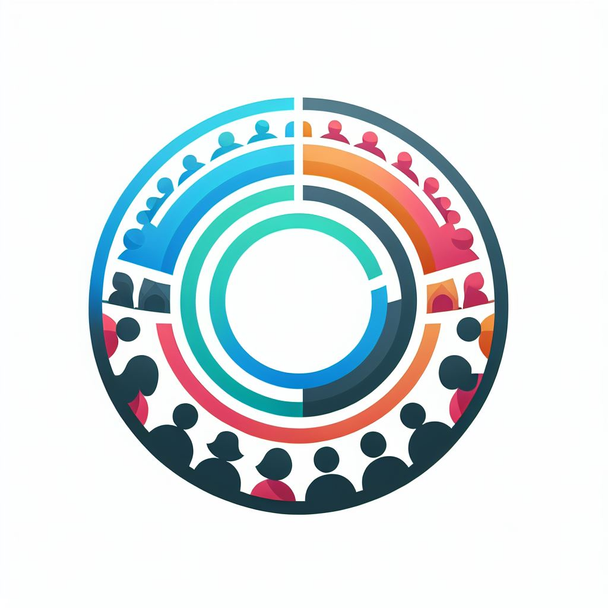

Call for applications
Student Assistant wanted
The ERC-funded project INCONEX, led by Dr Lucy Kinski, sought a motivated student assistant to join the team at the University of Salzburg — supporting literature and data research, data processing, and content analysis (10 hours/week; BA/MA enrolment; very good German and/or Spanish).